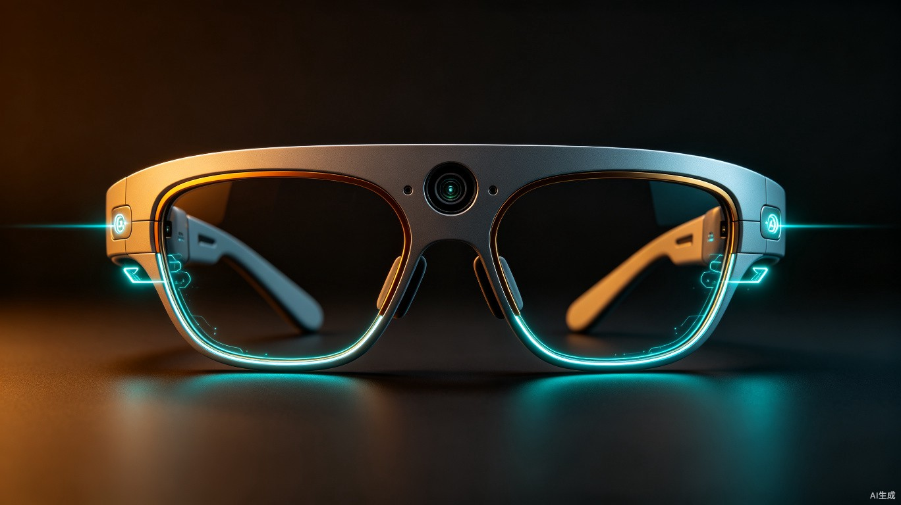

视障人群多智能体环境感知智能眼镜
五个AI智能体协作，让黑暗中也能自由行走

金色暮光下，佩戴者自信行走在城市街道，AI实时感知周围环境
感知方舟采用眼镜形态——眼镜是人类最自然的"增强感知"载体， 摄像头自然位于视线前方，麦克风贴近耳侧，骨传导模块贴合太阳穴。 佩戴者不需要学习任何新交互，戴上眼镜即获得AI感知能力。 外观设计与普通眼镜无异，避免"残障标签化"。
中国有超过 1700万 视障人群。他们看不见红绿灯、认不出对面走来的是谁、读不了药盒上的说明书。 导盲犬全国不足5万只，覆盖率不到 0.3%。 而 AI 技术的爆发，让一种全新的可能浮出水面——不是多养几万只导盲犬，而是打造一副永不疲倦的AI智能眼镜。
无法感知台阶、水坑、来车方向，跌倒和交通事故风险极高。路口无法判断红绿灯状态。
路牌、菜单、药盒、价签——生活中无处不在的文字，对视障者是完全不可见的屏障。
无法识别对面走来的是谁，错过挥手、点头等社交信号，长期导致社交退缩与心理封闭。
跌倒后无法起身更无法求助，突发身体不适无法拨打急救电话，黄金救援时间白白流逝。
感知方舟不是一个功能清单，而是一个陪伴视障者从早到晚的全天候感知伙伴。 以下场景基于对 5 位视障用户（全盲3人、低视力2人）的深度访谈提炼， 覆盖出行、就餐、社交、紧急等高频生活节点——每一个时间节点，背后都有具体的AI智能体在工作。
"早安。今天多云，气温24度。门口路面干燥，左前方3米处有一辆共享单车，注意避让。电梯已到达6层。"
AGENT 01 · 场景感知"直行15步到达公交站。326路公交车即将到站，请准备上车。上车后第二排靠窗有空位，向右转两步即可落座。"
AGENT 02 · 导航引导"菜单第一页：红烧排骨饭28元，宫保鸡丁饭22元。第二页有今日特价：番茄牛腩面18元。您上次点过宫保鸡丁，要再来一份吗？"
AGENT 04 · 社交辅助"注意！右侧有电动车快速接近，距离5米，请立即向左避让！" —— 骨传导耳机以最高音量播报，同时镜腿高频震动。其他所有Agent输出被即时挂起。
AGENT 03 · 安全预警 · 最高优先级"前方走来的是你的同事小王，他正在朝你挥手。要不要打个招呼？" —— 让视障者第一次能主动发起社交，而不是被动等待。
AGENT 04 · 社交辅助"走老路线回家吧，但注意3号楼今天有施工，建议绕行。对了，你常去的便利店今天打烊了，隔壁新开了一家。"——眼镜记住了你的习惯，比你自己还了解你的日常。
AGENT 05 · 环境记忆"检测到跌倒。您还好吗？10秒内未响应将自动联系紧急联系人。" —— 同时，家属端App收到实时位置推送与状态告警，黄金救援不再浪费。
AGENT 03 · 安全预警 + 家属App同步持续运行的环境描述引擎，每3秒输出一次周围环境摘要，帮助视障者在脑海中构建实时"画面"。
根据用户语音告知的目的地，实时规划步行路径，以方向+步数的方式精确引导。
7×24不间断运行的危险检测引擎，发现威胁立即打断所有其他输出，以最高音量紧急播报。
按需激活的信息读取与社交辅助引擎，帮助视障者获取文字信息、识别社交场景。
这是PerceptionArk区别于普通智能眼镜的核心。它持续学习用户的常用路线、熟悉面孔、生活节奏和偏好习惯，让眼镜从"陌生工具"逐渐变成"贴身伙伴"。用户走得越多，眼镜越懂路；见的人越多，眼镜越懂谁重要；用得越久，越像一位老朋友。
TECH STACK
向量数据库：本地 SQLite-VSS 存储路线轨迹与面孔特征向量，余弦相似度匹配，无需联网
增量学习：用户行为日志以时间窗口加权，新数据权重高，遗忘曲线衰减旧数据，避免全量重训
习惯挖掘：基于时序模式（Time2Graph）提取每日作息规律，异常检测触发提醒
隐私边界：所有记忆数据仅存于眼镜端本地，不云端同步，恢复出厂设置即清除
当多个Agent同时产生输出需求时，Orchestrator按以下优先级仲裁链路进行调度：
优先级链路：安全预警 (P0) > 场景感知 (P1) > 导航引导 (P2) > 社交辅助 (P3) > 环境记忆 (P3) · 同级按时间片轮转
感知方舟不是简单调用一个大模型，而是深度利用 TRAE 平台的多智能体编排能力， 将TRAE的核心能力映射到系统的每一个环节。
利用TRAE的多Agent编排框架，定义五个专业Agent的角色、工具集和协作协议。Orchestrator作为中央协调者，通过TRAE的任务分发机制将感知数据路由到对应Agent，并管理Agent间的上下文传递。
→ 映射到 Orchestrator + 5 Agents为每个Agent配置TRAE工具链：场景感知Agent调用视觉理解API；导航Agent调用地图SDK和路径规划工具；安全Agent调用物体检测+测距工具；社交Agent调用OCR和人脸识别工具；环境记忆Agent调用本地向量库与习惯学习模型。TRAE统一管理工具注册与调用。
→ 映射到 Agent 工具链配置利用TRAE的上下文管理能力，维护一份共享环境状态：当前GPS位置、场景类型（室内/室外/路口）、最近危险事件等。各Agent读取共享上下文做出更精准判断，避免重复推理。
→ 映射到 Shared Context Layer利用TRAE的流式响应能力，Agent的推理结果以流式方式传输到语音合成模块，实现"边推理边播报"。场景描述从原来的3秒等待缩短至首字输出<500ms（云端4G网络条件下），端侧安全预警延迟<200ms（NPU本地推理），大幅降低感知延迟。
→ 映射到 语音合成流式通道用户说"带我去超市"时，TRAE的意图识别能力解析目的地实体，触发导航Agent；说"读一下这个"时，触发社交Agent的OCR。自然语言指令无需固定话术，降低视障者的学习成本。
→ 映射到 语音交互入口"前方是什么？""是一家药店。""帮我读一下招牌。"——利用TRAE多轮对话能力，视障者可以基于Agent上一轮播报进行追问，系统保持对话上下文，实现自然连续的感知交互。
→ 映射到 对话管理模块将广角摄像头、麦克风阵列、IMU传感器和骨传导模块集成在一副钛合金眼镜中。摄像头自然位于视线前方，佩戴者不需要学习任何新交互——戴上眼镜即获得AI感知能力。外观与普通眼镜无异，避免"残障标签化"。
视障感知是生死攸关的实时场景——0.5秒的延迟可能意味着一辆电动车已经撞上。 感知方舟从架构层面设计了端云协同和三级降级策略，确保任何网络条件下都不失能。
网络畅通时，五Agent全功能运行。视觉理解、OCR、人脸识别等重计算在云端完成，眼镜端仅负责传感器采集和语音输出。延迟最优、功能最全。
网络不稳定时，自动切换到眼镜端轻量模型。安全预警和场景感知由端侧NPU实时运行（YOLO目标检测+距离估算），导航和社交Agent降级为缓存模式。安全能力绝不中断。
完全无网络时，系统进入纯离线保命模式。IMU跌倒检测+本地SOS呼救+最后位置缓存。一旦网络恢复，自动同步离线期间的告警日志到家属端。
摄像头持续拍摄 + 人脸识别 = 极高隐私风险。 感知方舟从第一天起就将隐私保护作为架构级约束，而非事后补丁。
视频帧在眼镜端NPU上完成目标检测和特征提取，仅将结构化描述（"前方3米有台阶"）传输到云端。原始视频流不上传，从物理层面杜绝视频泄露。
所有感知数据在推理完成后立即销毁，云端不存储任何环境快照。仅跌倒SOS事件保留脱敏日志（时间+位置），用于家属端历史查询。
面孔识别功能需用户主动开启，且仅在本地特征库中匹配用户预先登记的熟人。不接入任何公共人脸数据库，不进行陌生人身份推测。
眼镜配有物理摄像头滑盖——用户可随时手动遮挡摄像头，系统自动进入纯IMU+麦克风模式。软件隐私开关之外，提供硬件级的信任保障。
视障辅助领域已有导盲犬、智能盲杖、手机无障碍App，以及 OrCam MyEye、Envision Glasses 等 AI 视觉辅助产品。感知方舟不是简单替代，而是以多智能体协作 + TRAE平台 + 公益定价实现维度升阶。
| 能力维度 | 导盲犬 | 智能盲杖 | 手机无障碍App | OrCam MyEye | Envision Glasses | 感知方舟 |
|---|---|---|---|---|---|---|
| 环境语义理解 | 有限（动物本能） | 不支持 | 需手动拍摄 | 单场景识别 | 需手动触发 | 实时自动 |
| 文字信息读取 (OCR) | 不支持 | 不支持 | 需手动操作 | 支持 | 支持 | 自动识别 |
| 人脸识别 | 不支持 | 不支持 | 不支持 | 支持 | 部分支持 | 主动告知 |
| 跌倒自动SOS | 不支持 | 部分支持 | 需App前台 | 不支持 | 不支持 | 7×24自动 |
| 导航引导精度 | 路线熟悉 | 不支持 | 语音导航 | 不支持 | 基础导航 | 步数级精确 |
| 多智能体协作 | 不适用 | 不支持 | 单模型 | 单模型 | 单模型 | 五Agent协作 |
| 双手占用 | 需牵绳 | 需手持 | 需手持 | 佩戴式 | 佩戴式 | 完全解放 |
| 环境记忆学习 | 路线记忆 | 不支持 | 不支持 | 不支持 | 不支持 | 路线+面孔+习惯 |
| 参考售价 | 极高（训练费） | 低 | 免费/低 | ¥25,000+ | ¥15,000+ | ¥1,200 BOM |
| 离线降级能力 | 完全离线 | 完全离线 | 依赖网络 | 部分离线 | 依赖网络 | 三级降级 |
感知方舟的核心差异不在于"比谁功能多"，而在于多智能体协作架构带来的优先级抢占能力——现有产品均为单模型串行处理，无法在紧急场景下即时打断。同时，OrCam/Envision 售价过高（¥15,000-25,000），感知方舟以 ¥1,200 BOM + 软件免费 + 公益补贴，让AI辅助真正可及。
感知方舟不是PPT产品。我们规划了清晰的四阶段落地路径，本次比赛Demo即为Phase 1的MVP。
基于TRAE平台搭建五Agent协作Web原型。用手机摄像头模拟眼镜视角，验证多智能体编排、场景感知、OCR等核心链路。评委可现场体验。
开发iOS/Android App，用手机摄像头+蓝牙骨传导耳机+蓝牙IMU模块模拟眼镜硬件。在真实视障用户中进行小规模内测，收集场景数据。
与硬件团队合作完成第一版眼镜工程样机。钛合金镜架集成摄像头+IMU+骨传导+NPU模块。在合作盲人协会进行100人规模实地测试。
小批量量产（5000台），与残联、盲人协会合作公益补贴发放。同步开源Agent协作框架，吸引开发者扩展听障、认知障碍等新场景。
感知方舟面向视障群体，涉及辅助器具与电子设备双重属性，合规路径如下：
① 电子安全认证：3C强制认证（电源适配器+无线模块），预计Phase 2完成
② 辅助器具资质：申请地方残联辅助器具目录准入，Phase 3启动申报
③ 医疗器械评估：跌倒SOS功能不涉及诊断治疗，预期不属于二类医疗器械，但将主动咨询药监局确认分类边界
④ 数据合规：遵循《个人信息保护法》，人脸特征仅本地存储不上传，隐私评估报告随产品同步发布
不再完全依赖导盲犬或他人陪同，视障者可以独立、安全地出行。每一步都有方向。
路牌、菜单、药盒、价签——一切文字信息都可以即时"读"出来，打破信息壁垒。
7×24安全预警+跌倒自动SOS，意外发生时不再无助，黄金救援时间不再浪费。
面孔识别让视障者能主动打招呼，不再因"看不见"而错过社交机会。
家属端App实时同步位置和状态，突发情况第一时间收到通知。
多智能体架构可扩展至听障、认知障碍等场景，打造通用AI感知基础设施。
视障人群收入普遍偏低，如果产品定价过高就失去了公益意义。 感知方舟从BOM成本控制和公益补贴两个维度确保可负担性。
钛合金镜架+摄像头模组+IMU+骨传导+蓝牙芯片+NPU，量产后BOM控制在1,200元以内。对比 OrCam（¥25,000+）和 Envision（¥15,000+），感知方舟定位公益普惠。
TRAE平台驱动的AI能力（场景感知、OCR、导航等）永久免费。用户仅需购买硬件，后续使用无订阅费、无流量费，降低长期使用门槛。
与残联、盲人协会、公益基金合作，目标为低收入视障家庭提供50%以上购机补贴。同时争取纳入残疾人辅助器具医保报销目录。
这不是一句口号，而是 PerceptionArk 存在的理由。
五个智能体，一副眼镜，一千七百万人的新可能。
PerceptionArk · 感知方舟